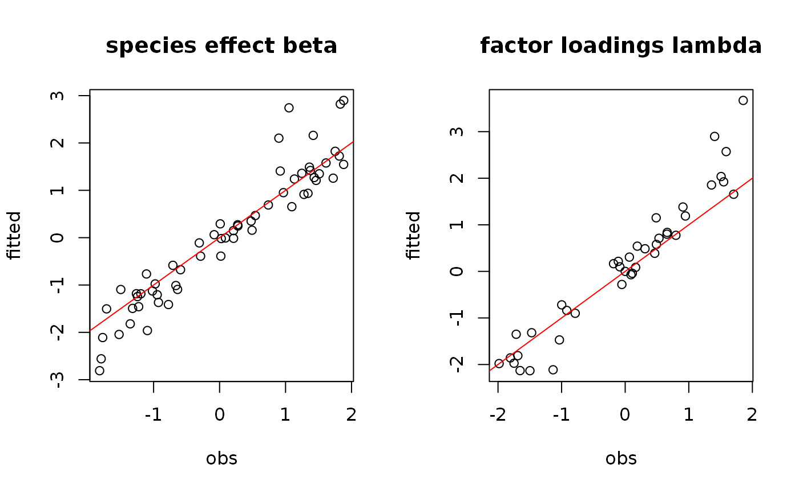
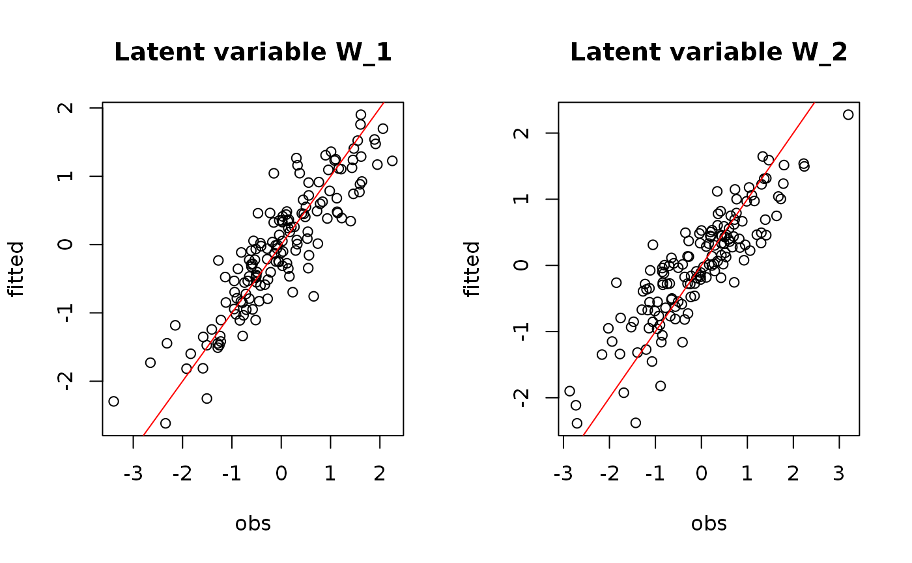
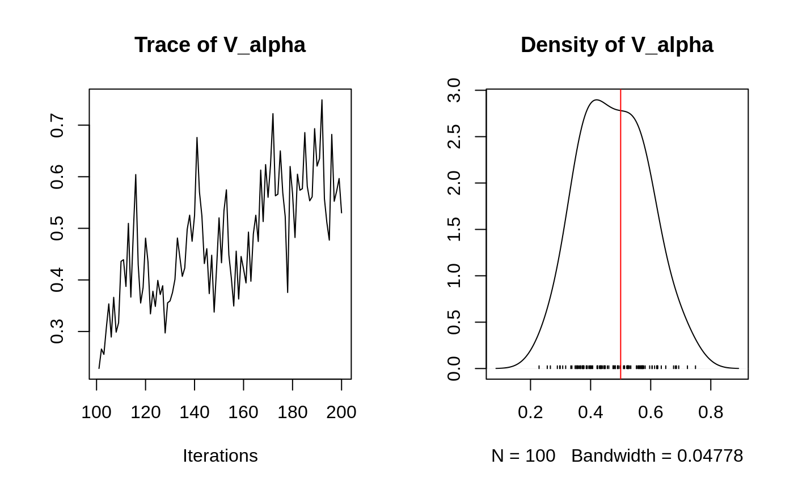
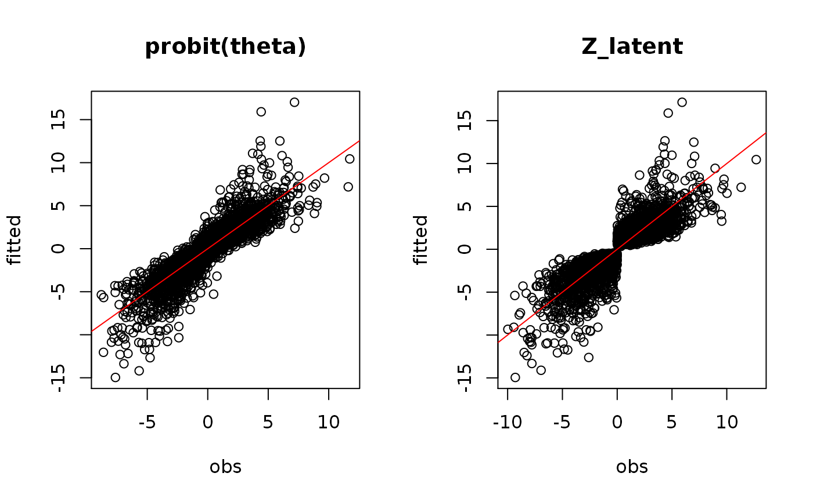

The jSDM_binomial_probit_block function performs a Binomial probit regression in a Bayesian framework.
The function calls a Gibbs sampler written in C++ code which uses conjugate priors to estimate the conditional posterior distribution of model's parameters.
jSDM_binomial_probit_block( burnin = 5000, mcmc = 15000, thin = 10, presence_site_sp, site_suitability, site_data, n_latent = 0, site_effect = "none", lambda_start = 0, W_start = 0, beta_start = 0, alpha_start = 0, V_alpha = 1, shape = 0.5, rate = 5e-04, mu_beta = 0, V_beta = 1e+06, mu_lambda = 0, V_lambda = 10, seed = 1234, verbose = 1 )
Arguments
| burnin | The number of burnin iterations for the sampler. |
|---|---|
| mcmc | The number of Gibbs iterations for the sampler. Total number of Gibbs iterations is equal to |
| thin | The thinning interval used in the simulation. The number of mcmc iterations must be divisible by this value. |
| presence_site_sp | A matrix \(n_{site} \times n_{species}\) indicating the presence by a 1 (or the absence by a 0) of each species on each site. |
| site_suitability | A one-sided formula of the form '~x1+...+xp' with p terms specifying the explicative variables for the suitability process of the model. |
| site_data | A data frame containing the model's explicative variables by site. |
| n_latent | An integer which specifies the number of latent variables to generate. Defaults to |
| site_effect | A string indicating whether row effects are included as fixed effects ( |
| lambda_start | Starting values for lambda parameters corresponding to the latent variables for each species must be either a scalar or a \(n_{latent} \times n_{species}\) upper triangular matrix with strictly positive values on the diagonal, ignored if |
| W_start | Starting values for latent variables must be either a scalar or a \(nsite \times n_latent\) matrix, ignored if |
| beta_start | Starting values for beta parameters of the suitability process for each species must be either a scalar or a \(p \times n_{species}\) matrix. If |
| alpha_start | Starting values for random site effect parameters must be either a scalar or a \(n_{site}\)-length vector, ignored if |
| V_alpha | Starting value for variance of random site effect if |
| shape | Shape parameter of the Inverse-Gamma prior for the random site effect variance |
| rate | Rate parameter of the Inverse-Gamma prior for the random site effect variance |
| mu_beta | Means of the Normal priors for the \(\beta\) parameters of the suitability process. |
| V_beta | Variances of the Normal priors for the \(\beta\) parameters of the suitability process. |
| mu_lambda | Means of the Normal priors for the \(\lambda\) parameters corresponding to the latent variables.
|
| V_lambda | Variances of the Normal priors for the \(\lambda\) parameters corresponding to the latent variables. |
| seed | The seed for the random number generator. Default to 1234. |
| verbose | A switch (0,1) which determines whether or not the progress of the sampler is printed to the screen. Default is 1: a progress bar is printed, indicating the step (in %) reached by the Gibbs sampler. |
Value
An object of class "jSDM" acting like a list including :
| mcmc.alpha | An mcmc object that contains the posterior samples for for site effects \(\alpha_i\), not returned if site_effect="none". |
| mcmc.V_alpha | An mcmc object that contains the posterior samples for variance of random site effect, not returned if site_effect="none" or site_effect="fixed". |
| mcmc.latent | A list by latent variable of mcmc objects that contains the posterior samples for latent variables \(W_l\) with \(l=1,\ldots,n_{latent}\), not returned if n_latent=0. |
| mcmc.sp | A list by species of mcmc objects that contains the posterior samples for species effects \(\beta_j\) and \(\lambda_j\) if n_latent>0. |
| mcmc.Deviance | The posterior sample of the deviance \(D\), with \(D=-2\log(\prod_{ij} P(y_{ij}|\beta_j,\lambda_j, \alpha_i, W_i))\), is also provided. |
| Z_latent | Predictive posterior mean of the latent variable Z. |
| probit_theta_pred | Predictive posterior mean of the probability to each species to be present on each site, transformed by probit link function. |
| model_spec | Various attributes of the model fitted, including the response and model matrix used, distributional assumptions as link function, family and number of latent variables, hyperparameters used in the Bayesian estimation and mcmc, burnin and thin. |
The mcmc. objects can be summarized by functions provided by the coda package.
Details
We model an ecological process where the presence or absence of species \(j\) on site \(i\) is explained by habitat suitability.
Ecological process: $$y_{ij} \sim \mathcal{B}inomial(\theta_{ij},t_i)$$ where
if n_latent=0 and site_effect="none" | probit\((\theta_{ij}) = \beta_{0j} + X_i \beta_j\) |
if n_latent>0 and site_effect="none" | probit\((\theta_{ij}) = \beta_{0j} + X_i \beta_j + W_i \lambda_j\) |
if n_latent=0 and site_effect="fixed" | probit\((\theta_{ij}) = \beta_{0j} + X_i \beta_j + \alpha_i\) and \(\alpha_i \sim \mathcal{N}(0,V_\alpha)\) |
if n_latent>0 and site_effect="fixed" | probit\((\theta_{ij}) = \beta_{0j} + X_i \beta_j + W_i \lambda_j + \alpha_i\) |
if n_latent=0 and site_effect="random" | probit\((\theta_{ij}) = \beta_{0j} + X_i \beta_j + \alpha_i\) |
if n_latent>0 and site_effect="random" | probit\((\theta_{ij}) = \beta_{0j} + X_i \beta_j + W_i \lambda_j + \alpha_i\) and \(\alpha_i \sim \mathcal{N}(0,V_\alpha)\) |
References
| Chib, S. and Greenberg, E. (1998) Analysis of multivariate probit models. Biometrika, 85, 347-361. |
| Warton, D. I.; Blanchet, F. G.; O'Hara, R. B.; O'Hara, R. B.; Ovaskainen, O.; Taskinen, S.; Walker, S. C. and Hui, F. K. C. (2015) So Many Variables: Joint Modeling in Community Ecology. Trends in Ecology & Evolution, 30, 766-779. |
See also
Examples
#============================================== # jSDM_binomial_probit_block() # Example with simulated data #============================================== #================= #== Load libraries library(jSDM) #================== #== Data simulation #= Number of sites nsite <- 150 #= Set seed for repeatability seed <- 1234 set.seed(seed) #= Number of species nsp<- 20 #= Number of latent variables n_latent <- 2 #= Ecological process (suitability) x1 <- rnorm(nsite,0,1) x2 <- rnorm(nsite,0,1) X <- cbind(rep(1,nsite),x1,x2) W <- cbind(rnorm(nsite,0,1),rnorm(nsite,0,1)) data <- cbind (X,W) beta.target <- t(matrix(runif(nsp*ncol(X),-2,2), byrow=TRUE, nrow=nsp)) l.zero <- 0 l.diag <- runif(2,0,2) l.other <- runif(nsp*n_latent-3,-2,2) lambda.target <- t(matrix(c(l.diag[1],l.zero, l.other[1],l.diag[2],l.other[-1]), byrow=TRUE, nrow=nsp)) param.target <- rbind(beta.target,lambda.target) V_alpha.target <- 0.5 V <- 1 alpha.target <- rnorm(nsite,0,sqrt(V_alpha.target)) probit_theta<-X%*%beta.target + W%*%lambda.target + alpha.target e <- matrix(rnorm(nsp*nsite,0,sqrt(V)),nsite,nsp) Z_true <- probit_theta + e Y <- matrix (NA, nsite,nsp) for (i in 1:nsite){ for (j in 1:nsp){ if ( Z_true[i,j] > 0) {Y[i,j] <- 1} else {Y[i,j] <- 0} } } #================================== #== Site-occupancy model # Increase number of iterations (burnin and mcmc) to get convergence mod<-jSDM_binomial_probit_block(# Iteration burnin=200, mcmc=200, thin=1, # Response variable presence_site_sp=Y, # Explanatory variables site_suitability=~x1+x2, site_data = X, n_latent=2, site_effect="random", # Starting values alpha_start=0, beta_start=0, lambda_start=0, W_start=0, V_alpha=1, # Priors shape=0.5, rate=0.0005, mu_beta=0, V_beta=1.0E6, mu_lambda=0, V_lambda=10, seed=1234, verbose=1)#> #> Running the Gibbs sampler. It may be long, please keep cool :) #> #> **********:10.0% #> **********:20.0% #> **********:30.0% #> **********:40.0% #> **********:50.0% #> **********:60.0% #> **********:70.0% #> **********:80.0% #> **********:90.0% #> **********:100.0%# =================================================== # Result analysis # =================================================== #========== #== Outputs #= Parameter estimates ## beta_j # summary(mod$mcmc.sp$sp_1[,1:ncol(X)]) mean_beta <- matrix(0,nsp,ncol(X)) pdf(file=file.path(tempdir(), "Posteriors_beta_jSDM_probit_block.pdf")) par(mfrow=c(ncol(X),2)) for (j in 1:nsp) { mean_beta[j,] <- apply(mod$mcmc.sp[[paste0("sp_",j)]] [,1:ncol(X)], 2, mean) for (p in 1:ncol(X)){ coda::traceplot(coda::as.mcmc( mod$mcmc.sp[[paste0("sp_",j)]][,p])) coda::densplot(coda::as.mcmc( mod$mcmc.sp[[paste0("sp_",j)]][,p]), main = paste(colnames( mod$mcmc.sp[[paste0("sp_",j)]])[p], ", species : ",j)) abline(v=beta.target[p,j],col='red') } } dev.off()#> pdf #> 2## lambda_j # summary(mod$mcmc.sp$sp_1[,(ncol(X)+1):(ncol(X)+n_latent)]) # summary(mod$mcmc.sp$sp_2[,(ncol(X)+1):(ncol(X)+n_latent)]) mean_lambda <- matrix(0,nsp,n_latent) pdf(file=file.path(tempdir(), "Posteriors_lambda_jSDM_probit_block.pdf")) par(mfrow=c(n_latent*2,2)) for (j in 1:nsp) { mean_lambda[j,] <- apply(mod$mcmc.sp[[paste0("sp_",j)]] [,(ncol(X)+1):(ncol(X)+n_latent)], 2, mean) for (l in 1:n_latent) { coda::traceplot(coda::as.mcmc(mod$mcmc.sp[[paste0("sp_",j)]] [,ncol(X)+l])) coda::densplot(coda::as.mcmc(mod$mcmc.sp[[paste0("sp_",j)]] [,ncol(X)+l]), main=paste(colnames(mod$mcmc.sp[[paste0("sp_",j)]]) [ncol(X)+l],", species : ",j)) abline(v=lambda.target[l,j],col='red') } } dev.off()#> pdf #> 2# Species effects beta and factor loadings lambda par(mfrow=c(1,2)) plot(t(beta.target), mean_beta, main="species effect beta", xlab ="obs", ylab ="fitted") abline(a=0,b=1,col='red') plot(t(lambda.target), mean_lambda, main="factor loadings lambda", xlab ="obs", ylab ="fitted")## W latent variables par(mfrow=c(1,2)) for (l in 1:n_latent) { plot(W[,l], summary(mod$mcmc.latent[[paste0("lv_",l)]])[[1]][,"Mean"], main = paste0("Latent variable W_", l), xlab ="obs", ylab ="fitted") abline(a=0,b=1,col='red') }## alpha # summary(mod$mcmc.alpha) par(mfrow=c(1,3)) plot(alpha.target, summary(mod$mcmc.alpha)[[1]][,"Mean"], xlab ="obs", ylab ="fitted", main="site effect alpha") abline(a=0,b=1,col='red') ## Valpha coda::traceplot(mod$mcmc.V_alpha) coda::densplot(mod$mcmc.V_alpha)#> #> Iterations = 201:400 #> Thinning interval = 1 #> Number of chains = 1 #> Sample size per chain = 200 #> #> 1. Empirical mean and standard deviation for each variable, #> plus standard error of the mean: #> #> Mean SD Naive SE Time-series SE #> 1560.124 32.781 2.318 6.662 #> #> 2. Quantiles for each variable: #> #> 2.5% 25% 50% 75% 97.5% #> 1488 1541 1562 1581 1623 #>#= Predictions ## probit_theta # summary(mod$probit_theta_pred) par(mfrow=c(1,2)) plot(probit_theta,mod$probit_theta_pred, main="probit(theta)",xlab="obs",ylab="fitted") abline(a=0,b=1,col='red') ## Z # summary(mod$Z_latent) plot(Z_true,mod$Z_latent, main="Z_latent", xlab="obs", ylab="fitted")